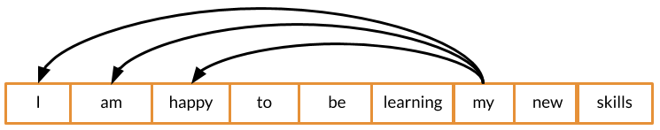
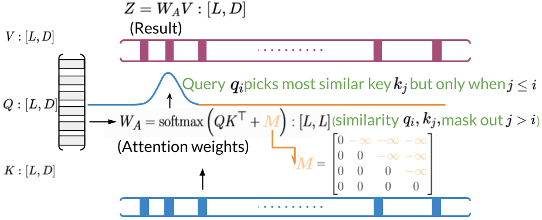

import sys
import numpy as np
import scipy.special
import textwrap
wrapper = textwrap.TextWrapper(width=70)
# to print the entire np array
np.set_printoptions(threshold=sys.maxsize)In this notebook you’ll explore the three ways of attention (encoder-decoder attention, causal attention, and bi-directional self attention) and how to implement the latter two with dot product attention.
Background
As you learned last week, attention models constitute powerful tools in the NLP practitioner’s toolkit. Like LSTMs, they learn which words are most important to phrases, sentences, paragraphs, and so on. Moreover, they mitigate the vanishing gradient problem even better than LSTMs. You’ve already seen how to combine attention with LSTMs to build encoder-decoder models for applications such as machine translation.

This week, you’ll see how to integrate attention into transformers. Because transformers are not sequence models, they are much easier to parallelize and accelerate. Beyond machine translation, applications of transformers include: * Auto-completion * Named Entity Recognition * Chatbots * Question-Answering * And more!
Along with embedding, positional encoding, dense layers, and residual connections, attention is a crucial component of transformers. At the heart of any attention scheme used in a transformer is dot product attention, of which the figures below display a simplified picture:

With basic dot product attention, you capture the interactions between every word (embedding) in your query and every word in your key. If the queries and keys belong to the same sentences, this constitutes bi-directional self-attention. In some situations, however, it’s more appropriate to consider only words which have come before the current one. Such cases, particularly when the queries and keys come from the same sentences, fall into the category of causal attention.

For causal attention, we add a mask to the argument of our softmax function, as illustrated below:


Now let’s see how to implement attention with NumPy. When you integrate attention into a transformer network defined with Trax, you’ll have to use trax.fastmath.numpy instead, since Trax’s arrays are based on JAX DeviceArrays. Fortunately, the function interfaces are often identical.
Imports
Here are some helper functions that will help you create tensors and display useful information:
create_tensor()creates a numpy array from a list of lists.display_tensor()prints out the shape and the actual tensor.
def create_tensor(t):
"""Create tensor from list of lists"""
return np.array(t)
def display_tensor(t, name):
"""Display shape and tensor"""
print(f'{name} shape: {t.shape}\n')
print(f'{t}\n')Create some tensors and display their shapes. Feel free to experiment with your own tensors. Keep in mind, though, that the query, key, and value arrays must all have the same embedding dimensions (number of columns), and the mask array must have the same shape as np.dot(query, key.T).
q = create_tensor([[1, 0, 0], [0, 1, 0]])
display_tensor(q, 'query')
k = create_tensor([[1, 2, 3], [4, 5, 6]])
display_tensor(k, 'key')
v = create_tensor([[0, 1, 0], [1, 0, 1]])
display_tensor(v, 'value')
m = create_tensor([[0, 0], [-1e9, 0]])
display_tensor(m, 'mask')query shape: (2, 3)
[[1 0 0]
[0 1 0]]
key shape: (2, 3)
[[1 2 3]
[4 5 6]]
value shape: (2, 3)
[[0 1 0]
[1 0 1]]
mask shape: (2, 2)
[[ 0.e+00 0.e+00]
[-1.e+09 0.e+00]]
Dot product attention
Here we come to the crux of this lab, in which we compute \textrm{softmax} \left(\frac{Q K^T}{\sqrt{d}} + M \right) V, where the (optional, but default) scaling factor \sqrt{d} is the square root of the embedding dimension.
def DotProductAttention(query, key, value, mask, scale=True):
"""Dot product self-attention.
Args:
query (numpy.ndarray): array of query representations with shape (L_q by d)
key (numpy.ndarray): array of key representations with shape (L_k by d)
value (numpy.ndarray): array of value representations with shape (L_k by d) where L_v = L_k
mask (numpy.ndarray): attention-mask, gates attention with shape (L_q by L_k)
scale (bool): whether to scale the dot product of the query and transposed key
Returns:
numpy.ndarray: Self-attention array for q, k, v arrays. (L_q by L_k)
"""
assert query.shape[-1] == key.shape[-1] == value.shape[-1], "Embedding dimensions of q, k, v aren't all the same"
# Save depth/dimension of the query embedding for scaling down the dot product
if scale:
depth = query.shape[-1]
else:
depth = 1
# Calculate scaled query key dot product according to formula above
dots = np.matmul(query, np.swapaxes(key, -1, -2)) / np.sqrt(depth)
# Apply the mask
if mask is not None:
dots = np.where(mask, dots, np.full_like(dots, -1e9))
# Softmax formula implementation
# Use scipy.special.logsumexp of masked_qkT to avoid underflow by division by large numbers
# Note: softmax = e^(dots - logaddexp(dots)) = E^dots / sumexp(dots)
logsumexp = scipy.special.logsumexp(dots, axis=-1, keepdims=True)
# Take exponential of dots minus logsumexp to get softmax
# Use np.exp()
dots = np.exp(dots - logsumexp)
# Multiply dots by value to get self-attention
# Use np.matmul()
attention = np.matmul(dots, value)
return attentionNow let’s implement the masked dot product self-attention (at the heart of causal attention) as a special case of dot product attention
def dot_product_self_attention(q, k, v, scale=True):
""" Masked dot product self attention.
Args:
q (numpy.ndarray): queries.
k (numpy.ndarray): keys.
v (numpy.ndarray): values.
Returns:
numpy.ndarray: masked dot product self attention tensor.
"""
# Size of the penultimate dimension of the query
mask_size = q.shape[-2]
# Creates a matrix with ones below the diagonal and 0s above. It should have shape (1, mask_size, mask_size)
# Use np.tril() - Lower triangle of an array and np.ones()
mask = np.tril(np.ones((1, mask_size, mask_size), dtype=np.bool_), k=0)
return DotProductAttention(q, k, v, mask, scale=scale)dot_product_self_attention(q, k, v)array([[[0. , 1. , 0. ],
[0.84967455, 0.15032545, 0.84967455]]])Citation
BibTeX citation:
@online{bochman2021,
author = {Bochman, Oren},
title = {The {Three} {Ways} of {Attention} and {Dot} {Product}
{Attention:} {Ungraded} {Lab} {Notebook}},
date = {2021-04-02},
url = {https://orenbochman.github.io/notes-nlp/notes/c4w2/lab01.html},
langid = {en}
}
For attribution, please cite this work as:
Bochman, Oren. 2021. “The Three Ways of Attention and Dot Product
Attention: Ungraded Lab Notebook.” April 2, 2021. https://orenbochman.github.io/notes-nlp/notes/c4w2/lab01.html.